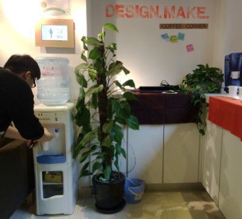

Heed 息德
Basic Info
Type: Product service system
Tool: Processing / Arduino / JUMP remote desktop
Team member: 7
Work in charge: Software Programming / Hardware Progmamming
Requirement & Purpose
HEED is a product service system use plant to improve indoor air quality in office space in China. It can help the people in office take care of plants by sensors and automatic system and better their understanding of air condition.
The system consisted of an intellegence system to monitor the situation of plants and watering, a visualizationg system of air condition, a consultancy and building-up service and a long-term monitoring and certification website.
The project followed a fast PSSD workflow in one week.

The demo testing of Heed in office space

Step 1: Research on indoor air condition
Step 2: Brain storming for concepts
Step 3: Prototyping for interactive plants
Step 4: Interview with people
Step 4: Interview with people